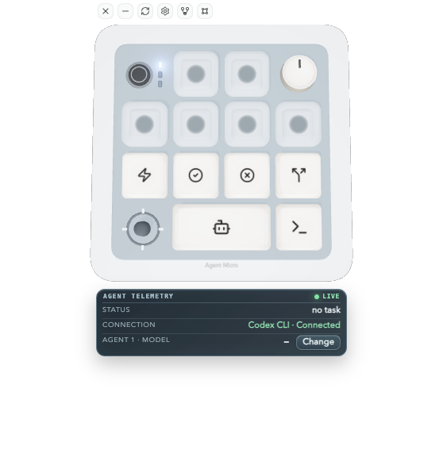
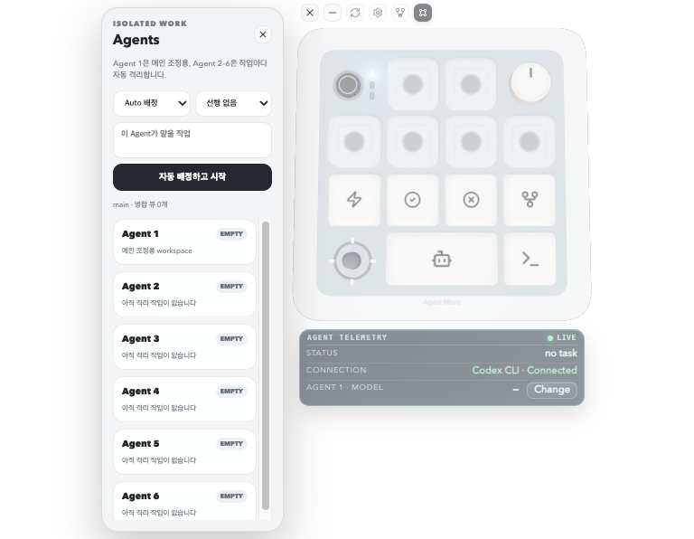

Connect Codex
Sign in with ChatGPT once. If Codex is already signed in on your Mac, this step can complete automatically.
A human-in-the-loop harness for Codex.
Agent Micro turns parallel Codex sessions into a visible workflow: one coordinator, five isolated workers, one dependency-aware path back to main.

Actual app · no mockupStart in three steps
Connect your existing Codex CLI, choose a repository, then hand separate tasks to separate Agents.
Sign in with ChatGPT once. If Codex is already signed in on your Mac, this step can complete automatically.
Pick the project once. Agent Micro reads its Git state and keeps your main workspace explicit.
Agent Micro picks the next free Worker, creates its worktree and branch, and launches Codex automatically.
The whole run, at a glance
The floating pad shows which Agent is active, follows the terminal pane you click, and keeps model, status, approvals, and common commands close.
Agent Manager
Agent 1 stays on main. Agent Micro assigns the next free Worker, detects a stopped session, retries it once without looping, and holds every merge until its selected predecessor is complete.

Actual Agent ManagerOne surface. Every move.
Click a terminal pane and Agent Micro follows. Switch sessions, clear stale drafts, change models, approve, decline, fork, or review without losing the active target. Git and Agent Manager open beside the pad without shifting it.
Focus sync
The selected 1–6 key, model, and status update when you focus a tracked Terminal or Ghostty session.
Clean commands
Command buttons clear stale CLI input before running their assigned action, so a forgotten draft never contaminates the next command.
A role for every agent
Give each slot its own role, model, workspace, tools, and instructions. Use Codex CLI or an OpenAI-compatible custom API without exposing advanced controls in the everyday view.
Get Agent MicroKeep changes focused. Verify the interface at every breakpoint. Preserve local-first behavior.
Git-native safety
Parallel tasks start from an explicit commit, run in separate worktrees, and cannot merge while dirty or overlapping another Agent’s files.
Agent Micro v1.1.0 · Public beta
Free, open source, and built for parallel Codex work on Apple silicon Macs.